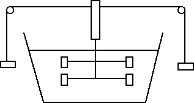

Calore specifico e latente
Legge fondamentale della termologia
Ci sono diversi modi per aumentare la temperatura di una sostanza liquida, come ad esempio l'acqua: ponendo la sostanza a diretto contatto con una fiamma, agitando l'acqua, esponendo l'acqua ai raggi del sole oppure facendo passare corrente nell'acqua. Un'esperienza fondamentale al riguardo è quella del mulinello di Joule schematizzato nella figura che segue:

L'energia potenziale dei pesi si converte progressivamente in energia cinetica di rotazione del cilindro e delle pale ad esso collegate. Tali pale agitano l'acqua contenuta nel recipiente. Alla fine, quando i pesi giungono a terra, il sistema progressivamente si ferma e, se si misura la temperatura dell'acqua, si scopre che è aumentata. Di quanto? Supponiamo che ΔE sia la perdita di energia meccanica del sistema (coincidente con l'energia potenziale gravitazionale iniziale dei pesi). Indichiamo invece con ΔT l'aumento di temperatura dell'acqua. Quello che si scopre è che il rapporto tra la variazione di energia ΔE e la variazione di temperatura ΔT è uguale a una costante C, detta capacità termica dell'acqua.
La capacità termica è una caratteristica della sostanza che stiamo considerando ma dipende anche dalla massa m della sostanza. È abbastanza intuitivo infatti che, a parità di energia fornita, riusciamo a riscaldare molto più facilmente un corpo che ha una piccola massa (nella fattispecie una piccola quantità di acqua). Infatti la capacità termica C può essere riscritta come C = c · m, dove c è una costante che dipende dalla sostanza in esame e prende il nome di calore specifico, m è invece la massa della sostanza. In definitiva possiamo riscrivere la variazione di energia meccanica dei pesi ΔE come ΔE = c · m · ΔT. Vale la pena menzionare fin da subito il valore del calore specifico dell'acqua che useremo spesso negli esercizi: c = 4186 J / (kg · K). Questo significa che sono necessari 4186 J di energia per alzare di 1 grado Kelvin la temperatura di 1 kg di acqua. Questo valore elevato rende l'acqua uno stabilizzatore termico: i terreni ricchi di acqua, i mari o i laghi si riscaldano molto di meno rispetto ai terreni aridi o ai deserti.
L'energia meccanica dei pesi non viene dunque persa ma viene acquistata sotto forma di calore dall'acqua. Il calore acquistato o ceduto da una sostanza che aumenta la sua temperatura di ΔT è uguale a Q = c · m · ΔT. Questa relazione prende il nome di legge fondamentale della termologia.
Poiché il calore ceduto determina un aumento della temperatura, ossia, a livello microscopico, un aumento dell'energia cinetica delle molecole, possiamo concludere che il calore è una forma di energia, detta anche energia termica. Se teniamo in considerazione questo fatto, possiamo dire che quella che si conserva non è l'energia meccanica ma la somma di energia meccanica ed energia termica. Quando ci sono degli attriti sappiamo che l'energia meccanica non si conserva. Ora abbiamo scoperto qual è la ragione: in presenza di attriti parte dell'energia meccanica viene convertita in energia termica, ossia in calore.
Per concludere questa sezione, vogliamo menzionare come un'altra unità di misura molto usata per il calore sia la caloria: una caloria è la quantità di calore necessaria per portare 1 g d'acqua dalla temperatura di 14.5°C alla temperatura di 15.5°C. È facile rendersi conto che le definizioni di caloria e di calore specifico dell'acqua implicano la seguente equivalenza tra le unità di misura: 1 cal = 4.186 J. Se usiamo la caloria come unità di misura del calore, il calore specifico verrà ad essere misurato in cal / (g°C).
Il calore necessario è: J.